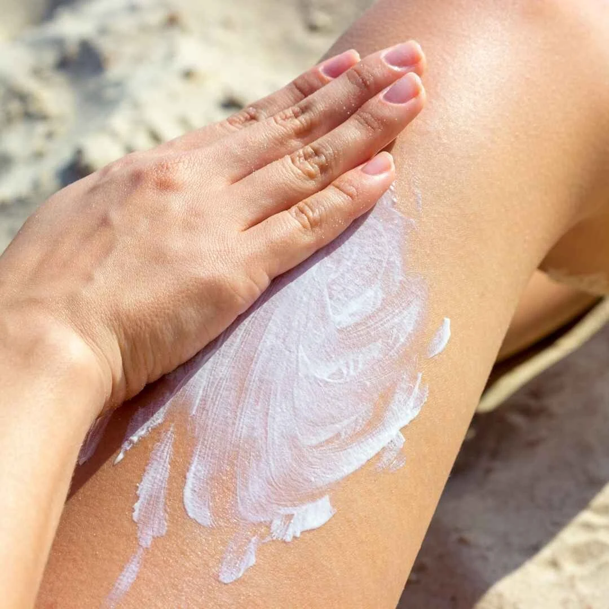

Os fotoprotetores, também conhecidos como protetores solares ou filtros solares, são produtos capazes de prevenir os males provocados pela exposição solar, como o câncer da pele, o envelhecimento precoce e a queimadura solar.
O protetor solar ideal
O fotoprotetor ideal deve ter amplo espectro, ou seja, ter boa absorção dos raios UVA e UVB, não ser irritante, ter certa resistência à água e não manchar a roupa.
Eles podem ser físicos ou inorgânicos e/ou químicos ou orgânicos. Os protetores físicos, à base de dióxido de titânio e óxido de zinco, se depositam na camada mais superficial da pele, refletindo as radiações incidentes. Eles não eram bem aceitos antigamente pelo fato de deixarem a pele com uma tonalidade esbranquiçada, mas isso tem sido minimizado pela coloração de base de alguns produtos.
Já os filtros químicos funcionam como uma espécie de “esponja” dos raios ultravioletas, transformando-os em calor.
Um fotoprotetor com fator de proteção solar (FPS) 2 até 15 possui baixa proteção contra a radiação UVB; o FPS 15-30 oferece média proteção contra UVB, enquanto os protetores com FPS 30-50 oferecem alta proteção UVB, e o FPS maior que 50, altíssima proteção UVB.
Pessoas de pele clara, que se queimam sempre e nunca se bronzeiam, geralmente aqueles com cabelos ruivos ou loiros e olhos claros, devem usar protetores solares com FPS 15, no mínimo.
Protetor solar UVA
Já em relação aos raios UVA, não há consenso quanto à metodologia do fator de proteção. Ele pode ser mensurado em estrelas, de 0 a 4, onde 0 é nenhuma proteção e 4 é altíssima proteção UVA, ou em números: < 2, não há proteção UVA; 2-4 baixa proteção; 4-8 média proteção, 8-12 alta proteção
e > 12 altíssima proteção UVA. O ideal é procurar por esta classificação ou pelo valor de PPD nos rótulos dos produtos.
Como escolher um fotoprotetor
Em primeiro lugar, devemos verificar o FPS, qual a proteção em relação aos raios UVA (PPD), e também se o produto é resistente ou não à água.
A nova legislação de filtros solares exige que tudo que o produto anunciar no rótulo, deve ter testes comprobatórios. Outra mudança é que o valor do PPD, que mede a proteção UVA, deve ser, sempre, no mínimo metade do valor do FPS. Isso porque se sabe que os raios UVA também contribuem para o risco de câncer da pele.
Protetor solar: Gel, creme, loção, spray ou bastão?
O “veículo” do produto – gel, creme, loção, spray, bastão – também deve ser considerado, pois isso ajuda na prevenção de acne e oleosidade, comuns quando se usa produtos inadequados para cada tipo de pele.
Pacientes com tendência à acne devem optar por produtos livres de óleo ou gel creme. Já aqueles pacientes que fazem muita atividade física e que suam bastante, devem evitar os géis, que saem facilmente.
Dicas para aplicar o protetor solar?
O produto deve ser aplicado ainda em casa, e reaplicado ao longo do dia a cada duas horas, se houver muita transpiração ou exposição solar prolongada.
É necessário aplicar uma boa quantidade do produto, equivalente a uma colher de chá rasa para o rosto e três colheres de sopa para o corpo, uniformemente, de modo a não deixar nenhuma área desprotegida.
O filtro solar deve ser usado todos os dias, mesmo quando o tempo estiver frio ou nublado, pois a radiação UV atravessa as nuvens.
Protetor solar bom é aquele que você usa!
Conheça a dermatologista Dra. Flavia Souza
Médica especialista em Dermatologia pela Sociedade Brasileira de Dermatologia, com pós-graduação em Dermatologia e Medicina Estética pelo Instituto Pele Saudável/SP. É membro da Sociedade Brasileira de Dermatologia e da Sociedade Brasileira de Cirurgia Dermatológica, além do Grupo Brasileiro de Melanoma e do Colegio Ibero Latinoamericano de Dermatología (CILAD).
Agende sua consulta